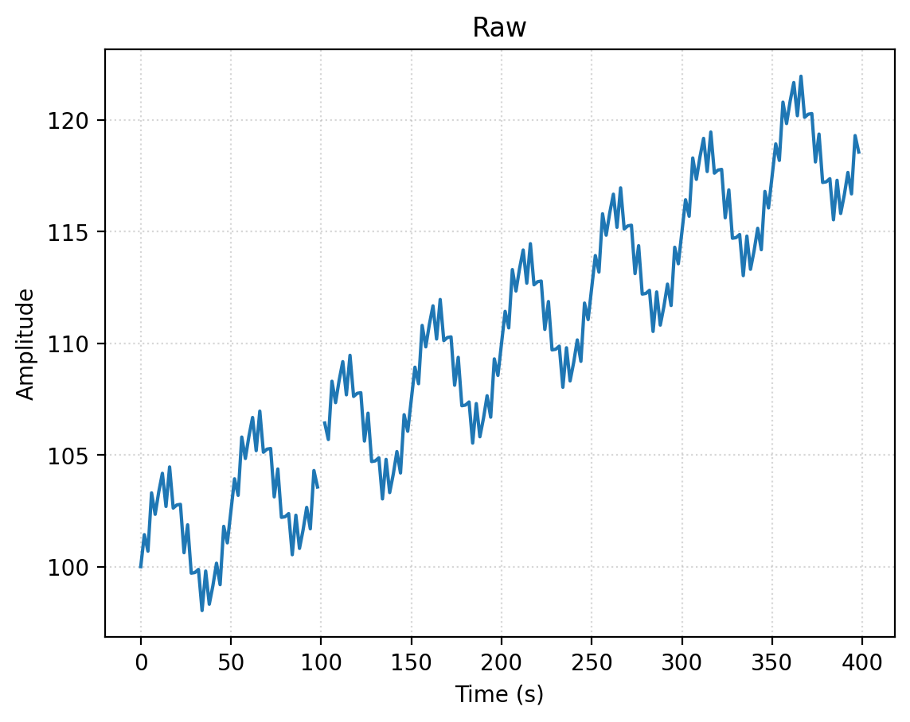
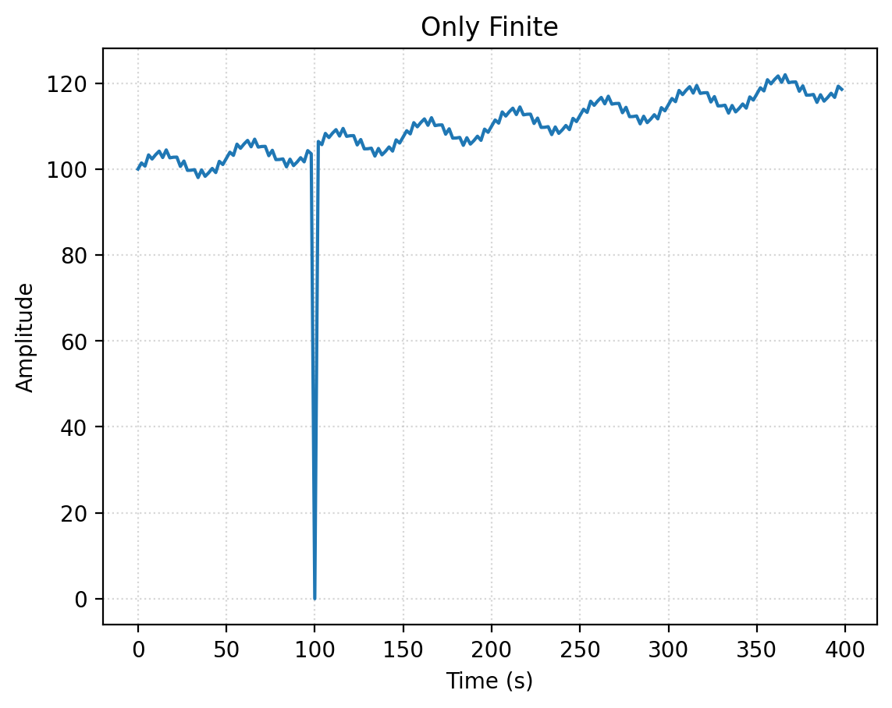
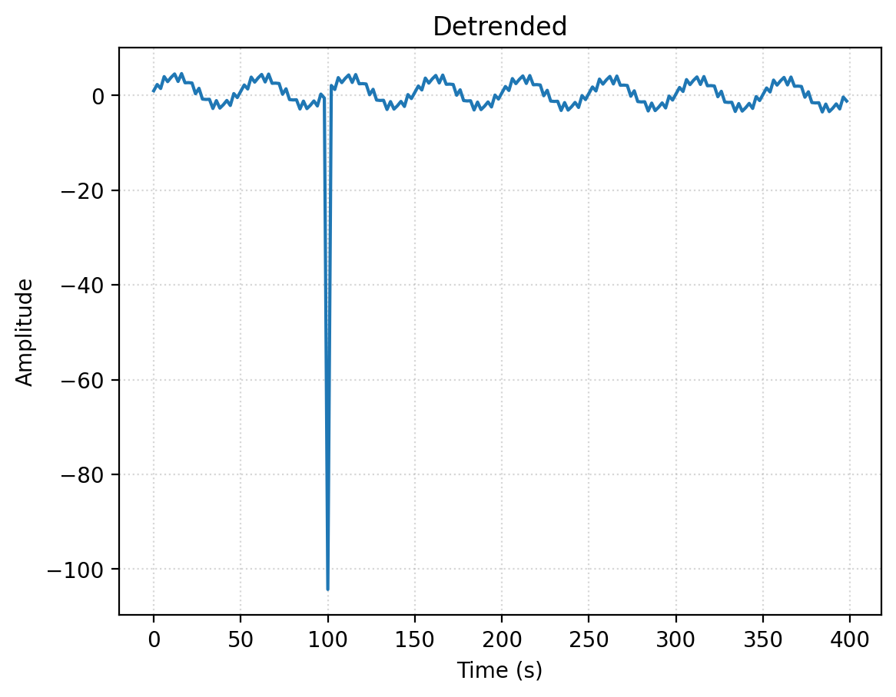
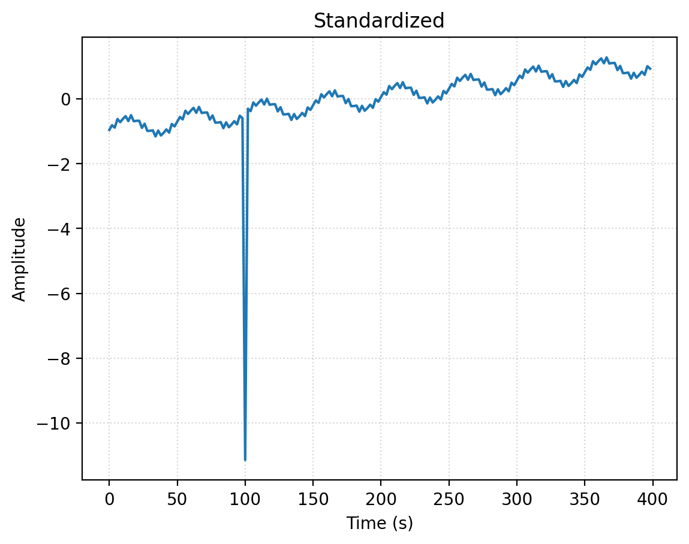
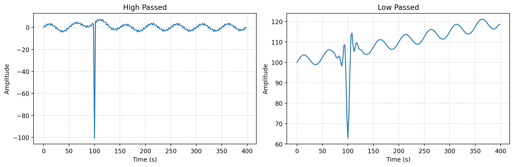

%pip install --upgrade nilearn -q --progress-bar offnilearn.signal.clean — the five knobs
fmri
nilearn
preprocessing
What nilearn.signal.clean actually does — detrend, standardize, filters, and ensure_finite — one knob at a time on a synthetic fMRI signal.

import warnings
warnings.filterwarnings("ignore")
import numpy as np
import matplotlib.pyplot as plt
import nilearn.signal
%config InlineBackend.figure_format = 'retina'
from rich import pretty
pretty.install()nilearn.signal.clean(signals, ...) is the workhorse fMRI preprocessing call. It bundles five operations behind one function, and they split into two categories:| Category | Knob | What it does || —————– | ———————— | ——————————- || Signal processing | detrend | remove slow drift || Signal processing | standardize | rescale to mean 0, std 1 || Signal processing | high_pass / low_pass | temporal frequency filters || Data hygiene | ensure_finite | replace NaN / ±Inf with 0 |The way to build intuition: construct a synthetic signal out of known parts, plant one bad value, then turn a single knob at a time and watch what each one removes.This notebook grew out of facebookresearch/neuroai#130 — a wrapper that skipped clean() entirely when the signal-processing knobs were off, silently disabling ensure_finite along with them. The cells below are why that matters.
# nilearn.signal.clean expects shape (time, n_features). One feature (one voxel).
t_r = 2.0 # repetition time: 2 s per sample (a typical fMRI TR)
n = 200
t = np.arange(n) * t_r # time axis in seconds
baseline = 100.0 # BOLD has a big DC offset
drift = 0.05 * t # slow linear drift (scanner warm-up etc.)
slow_signal= 3.0 * np.sin(2*np.pi*0.02 * t) # the "neural" signal we want to KEEP (0.02 Hz)
fast_noise = 1.0 * np.sin(2*np.pi*0.20 * t) # high-frequency nuisance (0.20 Hz)clean_truth = baseline + drift + slow_signal + fast_noise
signal = clean_truth.copy().reshape(-1, 1) # (time, 1)
signal[50, 0] = np.nan # drop in one non-finite valueThe signal and the planted NaN
Our synthetic voxel is baseline (100) + linear drift + slow 0.02 Hz wave + fast 0.20 Hz noise. The slow wave is the “neural” signal we want to keep; drift and fast noise are the nuisances.
We then set one sample to NaN. That isn’t artificial paranoia — non-finite values are normal in fMRI: brain masks, registration/resampling, and surface projection all leave NaN where there is no valid data. Downstream models choke on a single NaN, so scrubbing it is routine hygiene, not an edge case.
def describe(name, x):
x = np.asarray(x).ravel()
print(f"{name:<28} mean={np.nanmean(x):7.3f} std={np.nanstd(x):6.3f} "
f"finite={np.isfinite(x).all()}")
describe("raw input", signal)
plt.title("Raw")
plt.plot(t, signal)
plt.xlabel("Time (s)")
plt.ylabel("Amplitude")
plt.grid(True, linestyle=":", alpha=0.5)
plt.show()raw input mean=109.975 std= 5.999 finite=False
Knob 1 — ensure_finite: data hygiene
The odd one out: it’s about data validity, not signal shape. It replaces NaN / +Inf / -Inf with 0 and touches nothing else — watch sample 50 go from NaN → 0.
Note: in nilearn, ensure_finite defaults to False — you have to ask for it explicitly.
only_finite = nilearn.signal.clean(
signal,
detrend=False,
standardize=False,
ensure_finite=True
)
describe("ensure_finite only", only_finite)
print(" -> sample 50 was NaN, now:", only_finite[50, 0])
plt.title("Only Finite")
plt.plot(t, only_finite)
plt.xlabel("Time (s)")
plt.ylabel("Amplitude")
plt.grid(True, linestyle=":", alpha=0.5)
plt.show()ensure_finite only mean=109.425 std= 9.797 finite=True
-> sample 50 was NaN, now: 0.0
Knob 2 — detrend: removes drift, and amplifies a stray NaN
detrend fits one straight line across the whole time series and subtracts it. So if you don’t set ensure_finite=True, the planted NaN poisons that least-squares fit and every sample comes back NaN — one bad value contaminates all 200. Try it: drop ensure_finite=True and re-run.
Lesson: a single non-finite value does not stay local once a real operation touches it. With ensure_finite=True (below), the drift is cleanly removed and the signal recenters near 0.
detrended = nilearn.signal.clean(
signal,
detrend=True,
standardize=False,
ensure_finite=True
)
describe("detrend", detrended)
plt.title("Detrended")
plt.plot(t, detrended)
plt.xlabel("Time (s)")
plt.ylabel("Amplitude")
plt.grid(True, linestyle=":", alpha=0.5)
plt.show()detrend mean= 0.000 std= 7.732 finite=True
Knob 3 — standardize: rescales, doesn’t reshape
standardize is an affine transform: z = (x − mean) / std. Subtracting and dividing by constants changes the y-axis scale, not the shape — so plotted on its own it looks like nothing happened. The proof is in describe: mean goes ~100 → 0 and std → ~1. To see it, overlay raw vs standardized on twin y-axes: identical curves, different scales.
The spike at t≈100 is the NaN→0 value, now ~11 std below the baseline — a reminder that 0-fill is only “neutral” once the data is mean-centered.
# standardize=True/False is deprecated in recent nilearn; "zscore_sample" is the modern spelling.
standardized = nilearn.signal.clean(
signal,
detrend=False,
ensure_finite=True,
standardize="zscore_sample"
)
describe("standardize", standardized)
plt.title("Standardized")
plt.plot(t, standardized)
plt.xlabel("Time (s)")
plt.ylabel("Amplitude")
plt.grid(True, linestyle=":", alpha=0.5)
plt.show()standardize mean= 0.000 std= 0.997 finite=True
Knob 4 — high_pass / low_pass: temporal filters
Mirror images. High-pass keeps fast content and strips the slow drift/baseline, so the signal recenters on 0. Low-pass keeps the slow wave and smooths away the fast noise, leaving the baseline intact.
Watch the NaN→0 sample behave like an impulse: high-pass exposes it as a spike to ≈ −100 (the ~100 baseline got subtracted), while low-pass smears it into a dip with ringing on either side. Same theme as detrend, now in the frequency domain — one bad sample bleeds into its neighbours.
fig, (ax1, ax2) = plt.subplots(1, 2, figsize=(12, 4))
high_passed = nilearn.signal.clean(
signal,
t_r=t_r, # sampling interval — required for filtering
detrend=False,
standardize=False,
ensure_finite=True,
high_pass=0.01
)
describe("high_pass 0.01 Hz", high_passed)
ax1.plot(t, high_passed)
ax1.set_title("High Passed")
ax1.set_xlabel("Time (s)")
ax1.set_ylabel("Amplitude")
ax1.grid(True, linestyle="--", alpha=0.5)
low_passed = nilearn.signal.clean(
signal,
t_r=t_r,
detrend=False,
standardize=False,
ensure_finite=True,
low_pass=0.10
)
describe("low_pass 0.10 Hz", low_passed)
ax2.plot(t, low_passed)
ax2.set_title("Low Passed")
ax2.set_xlabel("Time (s)")
ax2.set_ylabel("Amplitude")
ax2.grid(True, linestyle="--", alpha=0.5)
plt.tight_layout()
plt.show()high_pass 0.01 Hz mean= 0.026 std= 7.590 finite=True
low_pass 0.10 Hz mean=109.422 std= 7.798 finite=True